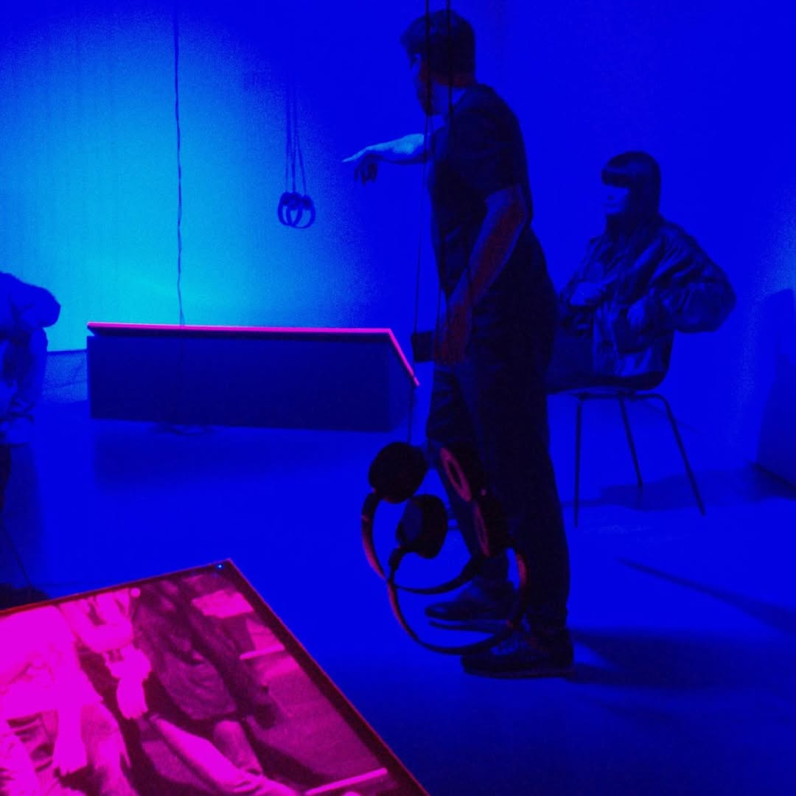
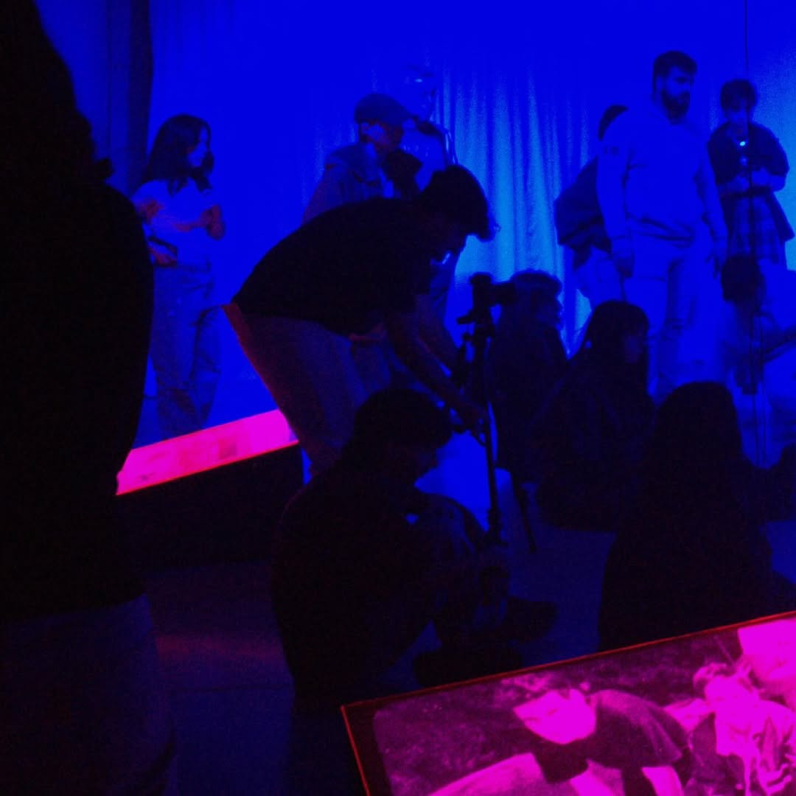
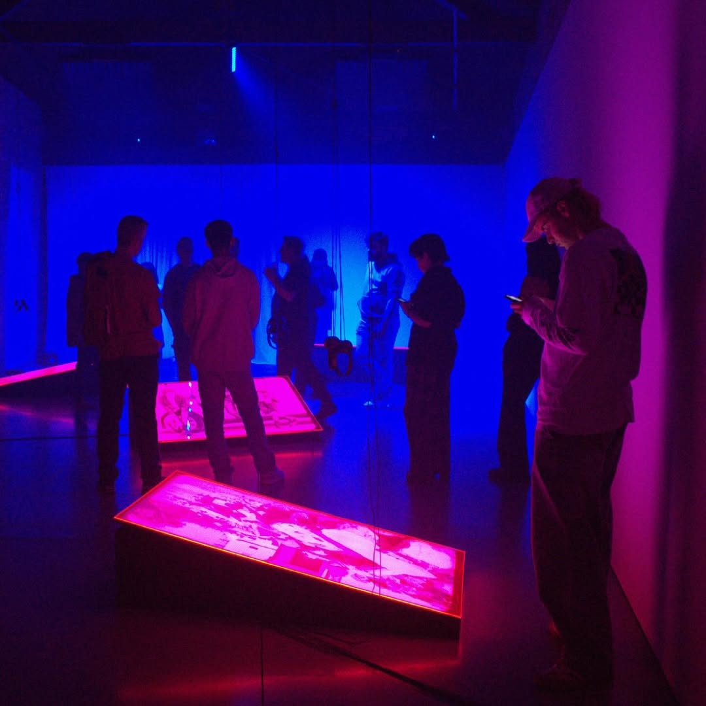
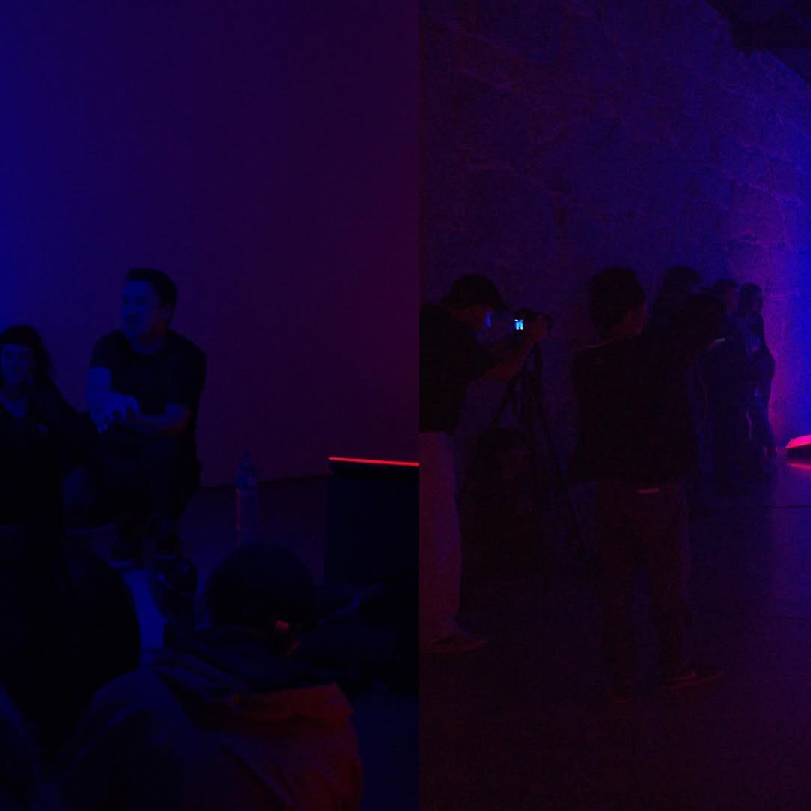
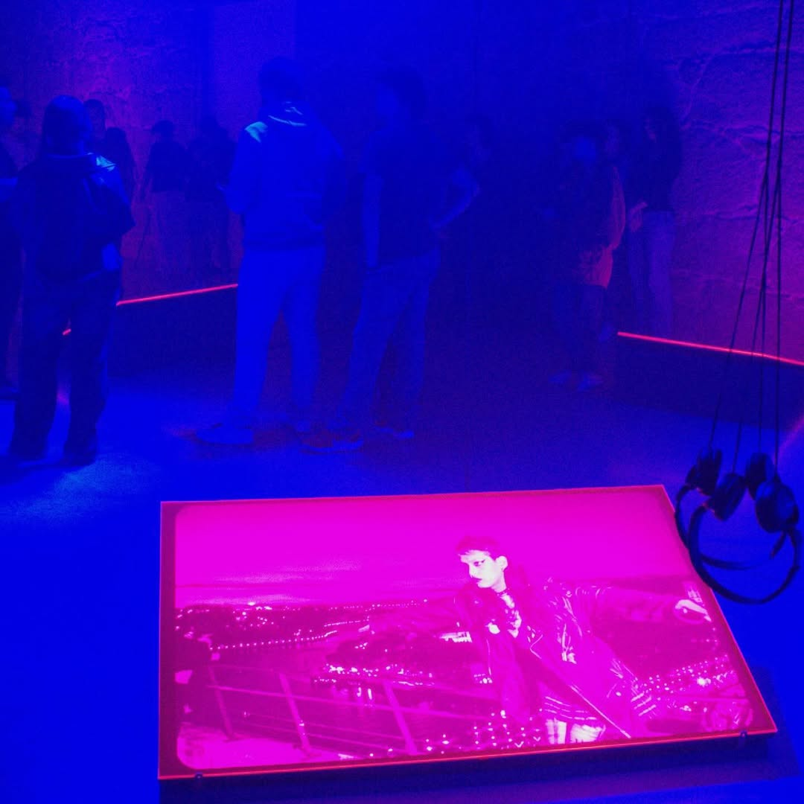

CAM is a Bachelor's degree that offers a multiplicity of experiences that go beyond the university walls, being a course open to the city and the world. We want to broaden horizons and be at the forefront of the image of the future. Discover the spaces and events that define our course.
MULTIPLEX
Multiplex is an event created by the CAM course that offers students and the city of Porto the opportunity to enjoy thematic Film Cycles and Masterclasses with major world filmmakers and artists such as Ildikó Enyedi, Nan Goldin, Sara Driver, ORLAN, and Manoel de Oliveira. Explore all editions here.


BATALHA FILM CENTER
We are privileged to be located next to Batalha, one of the city's most iconic film centers. This offers students the unique opportunity to attend classes and analyze cinema in a real movie theater environment. We also host weekly "Great Artists on Campus" Masterclasses with guests like Vhils, Mikhail Karikis, and Mila Turajlić.







ESPAÇO MIRA
Our students exhibit their multimedia installations at Espaço Mira, a flagship contemporary art gallery in Porto. This experience allows them to engage with the public not just as students, but as active artists in the city's cultural scene.
SPACES AND EQUIPMENT
The Porto Regional Centre of Lusófona University is undergoing a major expansion and modernization, featuring a dedicated studio area designed specifically for high-end audiovisual and multimedia production.
CAREER OPPORTUNITIES
Photography and Video Production
Professional practice in artistic, cinematographic, advertising, or institutional fields.
Advertising Agencies
Implementation of marketing strategies and creative advertising content.
Digital Animation Studios
Creating impactful visual narratives through motion design and 2D/3D animation.
Web and Multimedia Content
Design and management of digital platforms, social media, and interactive apps.
Audiovisual Art, Multimedia and AI
Exploring new frontiers in generative art and the technology-driven jobs of the future.
OUR PARTNERS
We work closely with leading companies in the creative industries, providing internship opportunities and collaborative projects. We are also proud of the companies founded by our alumni: